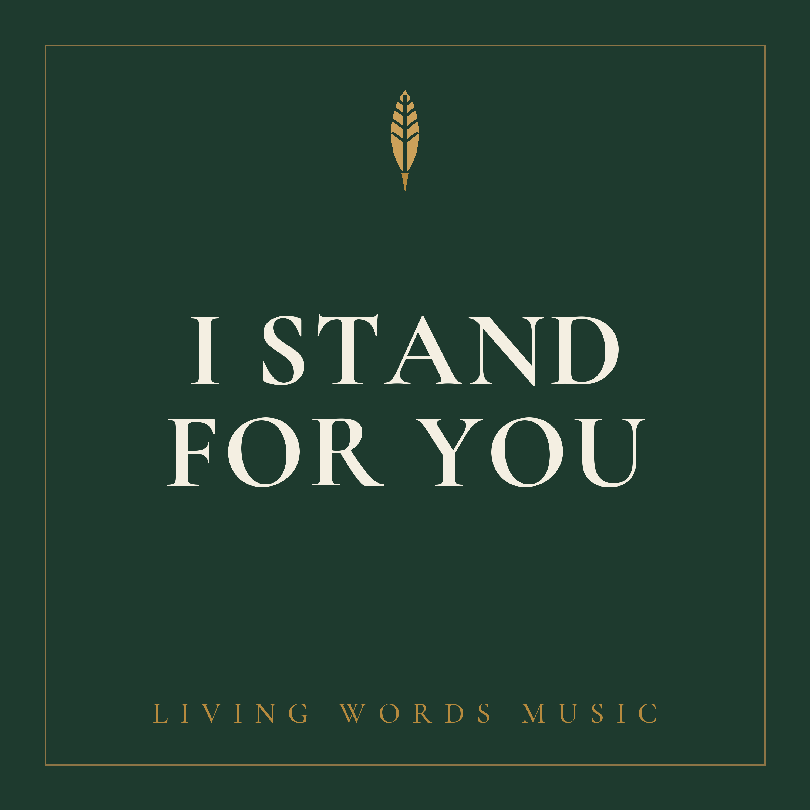

To every thing there is a season, and a time to every purpose under heaven. Ecclesiastes 3:1
Faith is not one steady feeling. We move through seasons with God, the bright and the dark, the loud and the quiet. These are five songs for that journey. Wherever you find yourself today, there is a song here to sing.

When faith is clear and Christ is plainly enough. The settled centre, where the heart simply loves Him.
Whom have I in heaven but You? And there is none upon earth that I desire beside You.Psalm 73:25

For the quiet, lonely places, when words run thin. The season of stillness, of seeking God in the silence.
Be still, and know that I am God.Psalm 46:10

Doubt that does not resolve, and walking on anyway. Faith as endurance, when the feelings are gone but the road goes on.
Though I walk through the valley of the shadow of death, I will fear no evil, for You are with me.Psalm 23:4

The breaking-through. When grace overwhelms you and you yield. The moment of being undone, and remade.
Woe is me, for I am undone, for mine eyes have seen the King, the Lord of hosts.Isaiah 6:5

Faith come through, standing, unshaken. The battle cry of the risen King, when the victory is sung aloud.
Thanks be to God, which giveth us the victory through our Lord Jesus Christ.1 Corinthians 15:57

Not a season, but the ground beneath them all. Whatever the season, bright or dark, loud or quiet, the soul returns here: to confession, and to the blood of Christ that makes us clean.
Wash me, and I shall be whiter than snow.Psalm 51:7
For I am persuaded that neither death, nor life, nor things present, nor things to come, shall be able to separate us from the love of God, which is in Christ Jesus our Lord. Romans 8:38–39